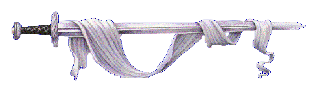

This is my indie side of the internet: dev logs, weird experiments, media notes, and little web toys.
Built with plain HTML/CSS/JS for old-web vibes.
You found my non-professional web hideout. This section is completely separate from my portfolio and has its own posts and projects.
Expect monthly logs, half-finished game ideas, music notes, and odd experiments that do not fit anywhere else.
Mood: Building in public
Last Visit: First time here.
Visits: 0
Until the guestbook is live, email me your message.